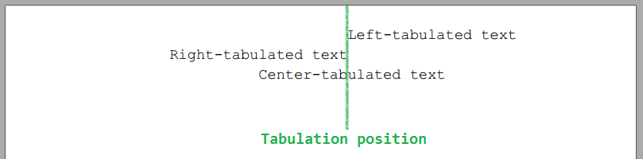
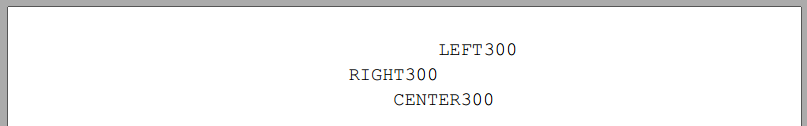
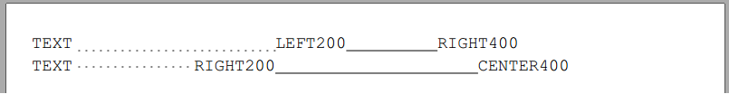

Adding Tabulations to Paragraph
Brief
The article describes how to add and configure Tabulations in a Paragraph.
Details
Paragraph can have Tabulations of three different types (Left, Right and Center).
In case of Left tabulation, the beginning of elements after TabSymbolElement will be aligned to the left tabulation position.
In case of Right tabulation, the end of elements after TabSymbolElement will be aligned to the right tabulation position.
In case of Center tabulation, elements after TabSymbolElement will be center-aligned around the center tabulation position.
Tabulation is described in Tabulation class and have to be added to Paragraph's Tabs collection.
Paragraph can have more than one tabulation.

To add tabulations to the Paragraph you must:
Add tabulation to the .Tabs collection of the Paragraph, providing Position of tabulation, Type and Leading.
Add TabSymbolElement between Paragraph elements,
indicating that elements following after TabSymbolElement have to be tabulated.
There are few ways to add tabulations into .Tabs collection:
Call method AddTabulation(this Paragraph paragraph, float position, TabulationType tabulationType, TabulationLeading leading = TabulationLeading.None).
Position is X coordinate from the left margin on the available area.
TabulationType can be Left, Right or Center.
TabulationLeading can be None, DotBottom, DotCenter or BottomLine.
Call method AddTabulationInPercent(this Paragraph paragraph, float position, TabulationType tabulationType, TabulationLeading leading = TabulationLeading.None).
Position is in perecents. If you pass 30 to the Position parameter, tabulation position will be calculated as 30% of the available area from left margin.
The rest of the parameters are the same as in AddTabulation() method.
There are few ways to add TabSymbol element to the Paragraph:
Call AddTabSymbol(this Paragraph paragraph) method of the Paragraph. New TabSymbolElement will be added to the Paragraph after previous elements.
Call method AddText(this Paragraph paragraph, string text, bool addTabulationSymbol = false) which adds string to the Paragraph's content,
and pass true to addTabulationSymbol parameter.
New TabSymbolElement will be added to the Paragraph after this element.
Call method AddTextToParagraph(this Paragraph paragraph, string text, bool addTabulationSymbol = false)
which adds string to the Paragraph's content and returns Paragraph,
and pass true to addTabulationSymbol parameter.
New TabSymbolElement will be added to the Paragraph after this element.
Call AddParagraph(this Section section, string text, bool addTabulationSymbol = false) which creates new Paragraph with text element,
and pass true to addTabulationSymbol parameter.
New TabSymbolElement will be added to the Paragraph after this text element.
See also:
Examples
One tabulation per line and AddTabSymbol() method: [hide]
s.AddParagraph().AddTabSymbol().AddTextToParagraph("LEFT300").AddTabulation(300, TabulationType.Left);
s.AddParagraph().AddTabSymbol().AddTextToParagraph("RIGHT300").AddTabulation(300, TabulationType.Right);
s.AddParagraph().AddTabSymbol().AddTextToParagraph("CENTER300").AddTabulation(300, TabulationType.Center);
The code above will generate the following:
Two tabulations per line, leading symbols and parameter addTabSymbol=true: [hide]
s.AddParagraph("TEXT", addTabulationSymbol: true)
.AddTextToParagraph("LEFT200", addTabulationSymbol: true)
.AddTextToParagraph("RIGHT400")
.AddTabulation(200, TabulationType.Left, TabulationLeading.DotBottom)
.AddTabulation(400, TabulationType.Right, TabulationLeading.BottomLine);
Paragraph par = s.AddParagraph();
par.AddText("TEXT", addTabulationSymbol: true);
par.AddText("RIGHT200", addTabulationSymbol: true);
par.AddText("CENTER400");
par.AddTabulation(200, TabulationType.Right, TabulationLeading.DotCenter);
par.AddTabulation(400, TabulationType.Center, TabulationLeading.BottomLine);
The code above will generate the following:
